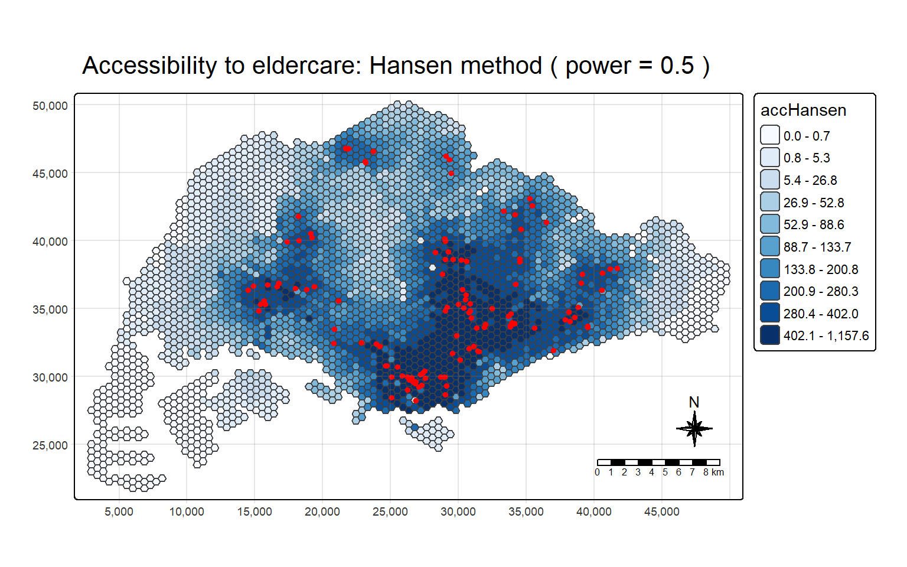
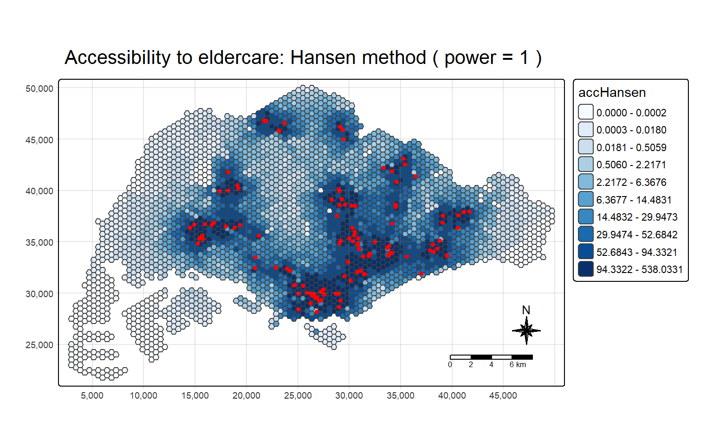
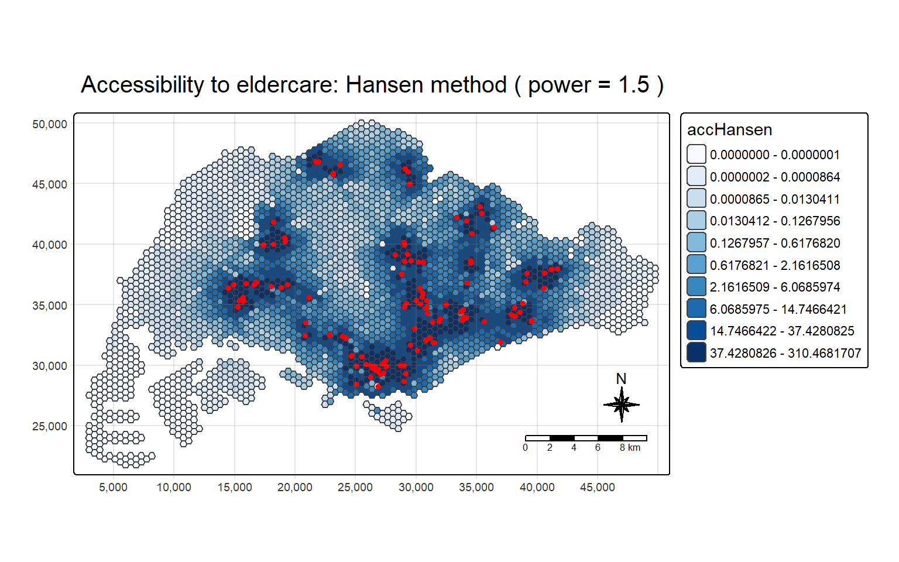
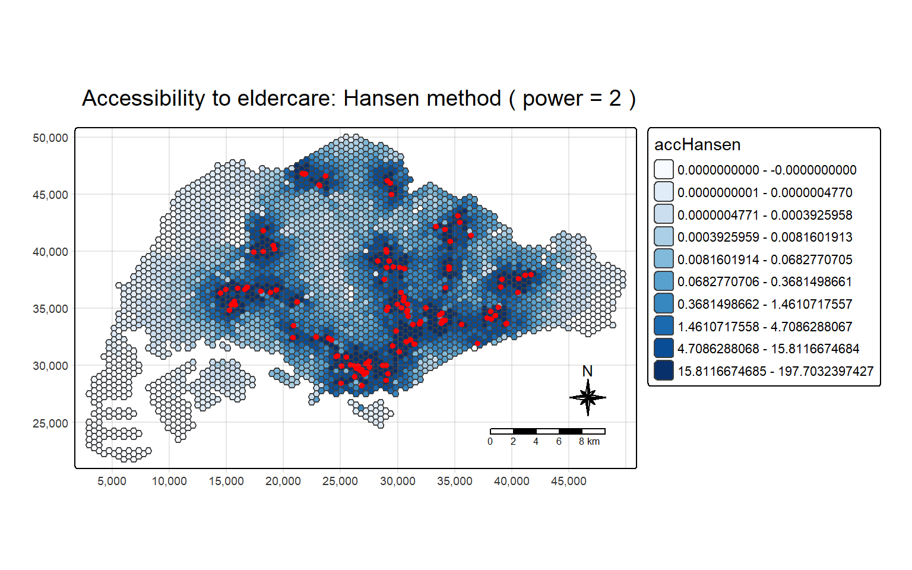
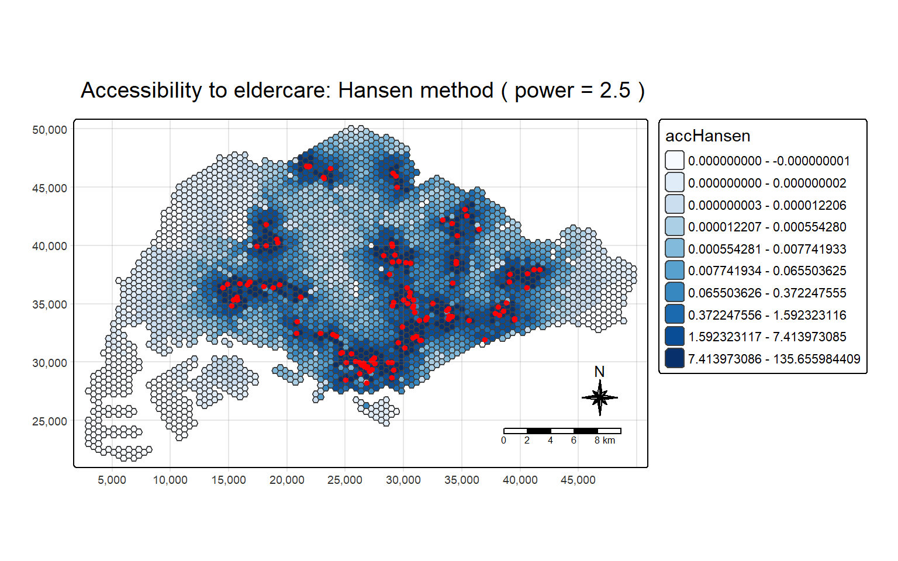

pacman::p_load(tmap, SpatialAcc, sf,
ggstatsplot, reshape2,
tidyverse)In-class_Ex09
mpsz <- st_read(dsn = "data/geospatial", layer = "MP14_SUBZONE_NO_SEA_PL")%>%
st_transform(crz=3414)Reading layer `MP14_SUBZONE_NO_SEA_PL' from data source
`C:\clyerica\ISSS626-GAA\In-class_Ex\In-class_Ex09\data\geospatial'
using driver `ESRI Shapefile'
Simple feature collection with 323 features and 15 fields
Geometry type: MULTIPOLYGON
Dimension: XY
Bounding box: xmin: 2667.538 ymin: 15748.72 xmax: 56396.44 ymax: 50256.33
Projected CRS: SVY21hexagons <- st_read(dsn = "data/geospatial", layer = "hexagons") %>%
st_transform(crz=3414)Reading layer `hexagons' from data source
`C:\clyerica\ISSS626-GAA\In-class_Ex\In-class_Ex09\data\geospatial'
using driver `ESRI Shapefile'
Simple feature collection with 3125 features and 6 fields
Geometry type: POLYGON
Dimension: XY
Bounding box: xmin: 2667.538 ymin: 21506.33 xmax: 50010.26 ymax: 50256.33
Projected CRS: SVY21 / Singapore TMeldercare <- st_read(dsn = "data/geospatial", layer = "ELDERCARE") %>%
st_transform(crz=3414) Reading layer `ELDERCARE' from data source
`C:\clyerica\ISSS626-GAA\In-class_Ex\In-class_Ex09\data\geospatial'
using driver `ESRI Shapefile'
Simple feature collection with 120 features and 19 fields
Geometry type: POINT
Dimension: XY
Bounding box: xmin: 14481.92 ymin: 28218.43 xmax: 41665.14 ymax: 46804.9
Projected CRS: SVY21 / Singapore TMeldercare <- eldercare %>%
select(fid, ADDRESSPOS) %>%
mutate(capacity = 100)
hexagons <- hexagons %>%
select(fid) %>%
mutate(demand = 100)ODMatrix <- read_csv("data/aspatial/OD_Matrix.csv", skip = 0)Rows: 375000 Columns: 6
── Column specification ────────────────────────────────────────────────────────
Delimiter: ","
dbl (6): origin_id, destination_id, entry_cost, network_cost, exit_cost, tot...
ℹ Use `spec()` to retrieve the full column specification for this data.
ℹ Specify the column types or set `show_col_types = FALSE` to quiet this message.distmat <- ODMatrix %>%
select(origin_id, destination_id, total_cost) %>%
pivot_wider(names_from=destination_id,
values_from=total_cost)%>%
select(c(-c('origin_id')))
distmat_km <- as.matrix(distmat/1000)computing Hansen’s accessibility with various powers
create_Hansen_map <- function(power){
acc_Hansen <- data.frame(ac(hexagons$demand,
eldercare$capacity,
distmat_km,
#d0 = 50,
power = power,
family = "Hansen"))
colnames(acc_Hansen) <- "accHansen"
acc_Hansen <- as_tibble(acc_Hansen)
hexagon_Hansen <- bind_cols(hexagons, acc_Hansen)
mapex <- st_bbox(hexagons)
result <- tm_shape(hexagon_Hansen,
bbox = mapex) +
tm_polygons(fill = "accHansen",
fill.scale = tm_scale_intervals(
style = "quantile",
n = 10,
values = "brewer.blues")) +
tm_shape(eldercare) +
tm_dots(size = 0.3,
fill = "red",
col = "black") +
tm_title(paste("Accessibility to eldercare: Hansen method ( power =", power ,")")) +
tm_layout(frame = TRUE) +
tm_compass(type="8star", size = 2) +
tm_scalebar() +
tm_grid(alpha = 0.2)
return (result)
}power_0.5<- create_Hansen_map(0.5)
power_1 <- create_Hansen_map(1)
power_1.5<- create_Hansen_map(1.5)
power_2<-create_Hansen_map(2)
power_2.5<-create_Hansen_map(2.5)Visualising the effect of power
power_0.5
power_1
power_1.5
power_2
power_2.5
From the above visualisations, we can observe that increasing the power decreases the range of Hansen’s accessibility values. This is because power indicates the distance decay, i.e. how much distance acts as a disincentive to access a destination. With lower power, distance is less of a disincentive (i.e., people are willing to travel further, and destinations which are further away will still contribute to the calculated accessibility value, hence the range of values increases. At power =0.5, Hansen accessibility value can reach over 1100. As power increases and distance represents a greater disincentive, the areas with low accessibility scores increase as destinations must be closer to a location to contribute to the accessibility value, and the upper limit of accessibility values will decrease. At power = 2.5, the highest Hansen accesibility value is about 135.